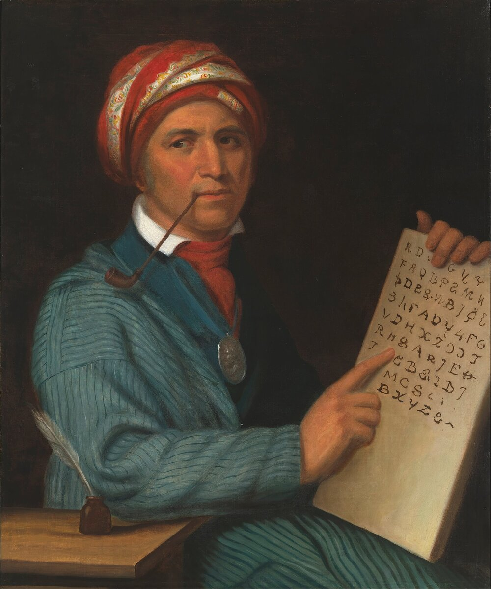

B2 · American History
The Trail of Tears
The Cherokee took their case to the Supreme Court and won. It made no difference.
Play the audio and follow along, then read it again on your own. Tap or hover over a highlighted word to see what it means.
In the winter of 1838, soldiers moved roughly sixteen thousand Cherokee people out of Georgia, Tennessee, Alabama and North Carolina and marched them about twelve hundred miles west. Somewhere between four and eight thousand of them died on the way, mostly of disease, exposure and hunger. The Cherokee name for it translates as “the trail where they cried”.
What makes the episode difficult to explain away is that it was not the work of a frontier mob. It was federal policy, passed by Congress, signed by a president, and carried out by the United States Army after the Supreme Court had decided against it.
The background was land, and specifically cotton. The invention of the cotton gin in the 1790s made short-staple cotton enormously profitable, and the best land for it was in the southeast — land held by the Cherokee, Muscogee, Choctaw, Chickasaw and Seminole nations. The discovery of gold in Cherokee territory in Georgia in 1829 removed any remaining patience.
The Cherokee had done, deliberately and successfully, everything that white Americans claimed to want. They had farms, roads, mills and schools. Sequoyah had created a writing system for the Cherokee language in the 1820s, and literacy spread so fast that the nation founded a bilingual newspaper. In 1827 they wrote a constitution modeled on the American one.

None of it helped, and some historians argue it made matters worse: a people who could not be described as wandering hunters was harder to dismiss, and therefore more inconvenient.
The Indian Removal Act passed Congress in 1830 by a narrow margin after a bitter debate — it is worth remembering that it was contested, and that many Americans opposed it. It authorised the president to negotiate the exchange of eastern land for territory west of the Mississippi.
The Cherokee response was to sue. In Worcester v. Georgia in 1832, Chief Justice John Marshall ruled that the Cherokee Nation was a distinct community in which the laws of Georgia had no force, and that dealings with it were the business of the federal government alone.
The decision was ignored. President Andrew Jackson is popularly quoted as saying “John Marshall has made his decision; now let him enforce it”, and although the quotation is almost certainly not authentic, it describes what happened accurately enough: nothing was enforced.
Removal was then achieved through a document called the Treaty of New Echota, signed in 1835 by a small faction of about twenty Cherokee men who had no authority to sign anything on the nation's behalf. More than fifteen thousand Cherokee signed a petition against it. The Senate ratified the treaty anyway, by one vote.
When the deadline passed in 1838, the army built stockades, collected families from their homes at short notice, and moved them west in detachments. People left with what they could carry, and property behind them was looted while they were still within sight of it.

The Cherokee were not the only nation removed — the Choctaw, Muscogee, Chickasaw and Seminole were all forced west, and the Seminole fought a long and costly war in Florida rather than go — but the Cherokee case is the one most often studied, because the legal record is so complete.
That record is the uncomfortable part. This was not a failure of law. The law worked: a case was brought, argued and won. What was missing was any mechanism, or any political will, to make the result mean anything.
Key Vocabulary
- removal the official policy of forcing a people to leave their land
- exposure the harmful effect of being outside in extreme weather without shelter
- a cotton gin a machine that separates cotton fibre from its seeds
- literacy the ability to read and write
- to sue to take a legal case against somebody to a court
- to enforce to make people obey a law or a decision
- a faction a small group inside a larger one, acting on its own
- to ratify to give formal approval to a treaty or agreement
- a stockade an enclosure with a high wooden fence, used to hold people
- to loot to steal from homes or shops, especially during disorder
The Trail of Tears — B2 · American History · Renan the Teacher, English Language Academy · https://renangrossi.github.io/englishclasses/reading/b2/trail-of-tears.html
Interactive Exercises
Practice
Complete each exercise, then click Submit to see your score and an explanation for every answer.
Speaking & Writing
Discussion
There are no right answers here — use these to practice speaking, or write a short answer to each.
- The Cherokee won their case and were removed anyway. What does that tell you about the relationship between law and power?
- Some historians argue that Cherokee success at farming, writing and self-government made removal more likely rather than less. How can that be?
- Many Americans at the time opposed the Removal Act. Does it matter, historically, that an injustice was contested?